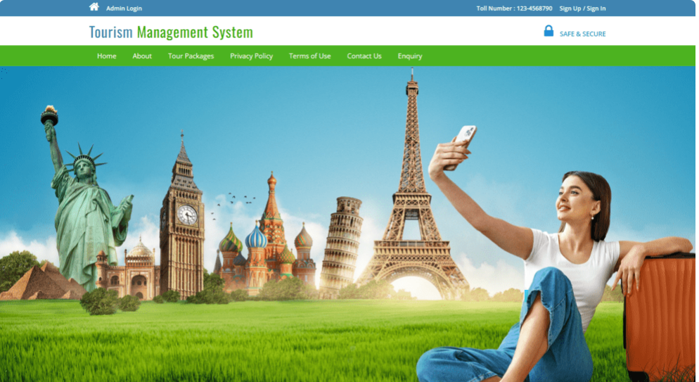
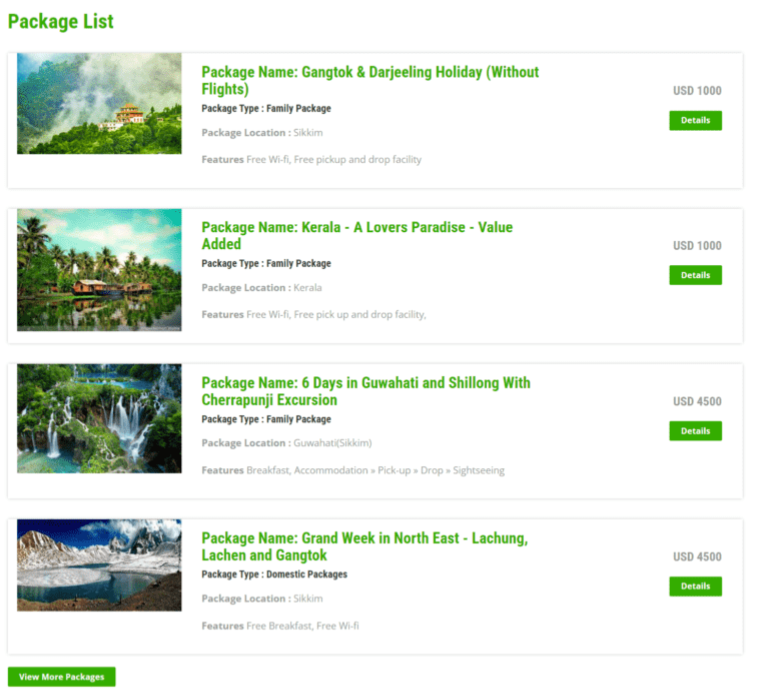
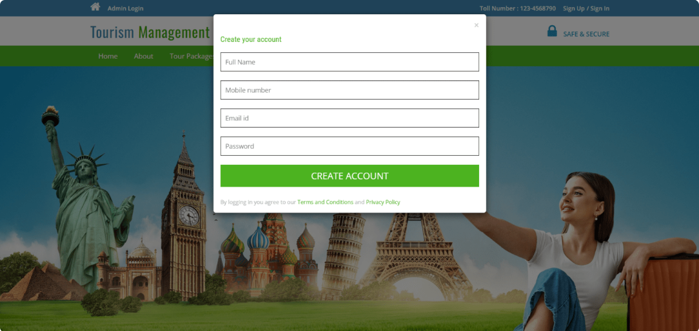
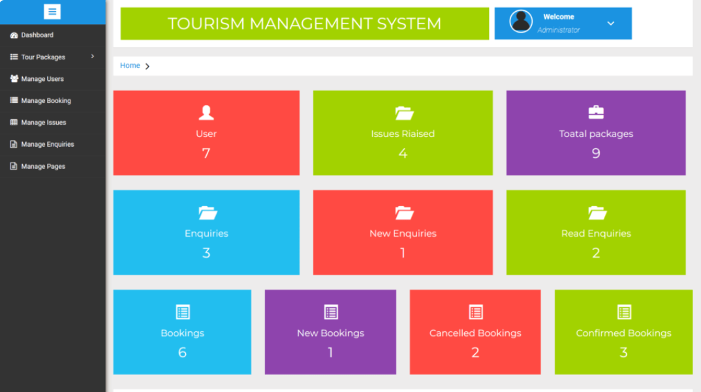

Tourism Management System - TMS
Project Description
The Tourism Management System (TMS) is a comprehensive platform designed to facilitate seamless tour
management for users and administrators. Built using PHP and MySQL, it provides a user-friendly
interface for managing tour packages, bookings, and user inquiries. The system ensures efficient
functionality for users, guest users, and administrators alike.
Key Responsibilities
- System Design: Architected the database and module structure to support dynamic
tour management functionalities.
- Backend Development: Built the core functionalities using PHP and MySQL for
robust data handling.
- User Management: Implemented secure login, registration, and password recovery
features.
- Admin Dashboard: Developed an intuitive dashboard for managing packages,
bookings, inquiries, and issues.
- Frontend Development: Designed responsive UI elements using HTML, CSS,
JavaScript, and AJAX for seamless interactions.
Technologies Used
- Languages: PHP5.6, PHP7.x
- Database: MySQL 5.x
- User Interface: HTML, AJAX, jQuery, JavaScript
- Browsers Supported: Mozilla, Google Chrome, IE8, Opera
- Development Tools: XAMPP, Wamp, Mamp, or Lamp
Key Features
- For Users:
- Register, login, and manage account settings.
- Book tours and manage bookings.
- Generate tickets for complaints and recover passwords.
- For Admin:
- Create, update, and manage tour packages.
- Handle user inquiries and complaints.
- Monitor bookings and manage system pages.
- Guest Users: Access basic information about available packages.
Challenges Faced
- Ensuring secure user authentication and data management.
- Creating a responsive and intuitive user interface for diverse user needs.
- Handling real-time data updates for bookings and inquiries.
Results Achieved
The Tourism Management System successfully streamlined tour booking and management processes for users
and administrators. It received positive feedback for its efficiency and ease of use, making it a
valuable tool for tourism agencies.
Conclusion and Future Work
The TMS project is a step toward digitizing tourism management. Future enhancements include integrating
advanced analytics for user preferences, adding real-time payment gateways, and incorporating AI-based
tour recommendations.
Screenshots/Demo



